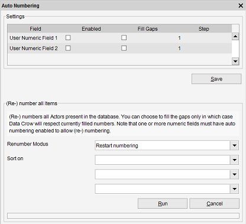

Auto numbering
Menu path: Tools > Auto Numbering
You can use this tool to number your items. It's quite easy to number your items and also to renumber items if you want to.

There are several options available for the auto numbering feature.
Field
The fields you can select are the custom fields. You can rename these fields in the General Field Settings.
Enabled
Enables auto numbering for this field. The field will also be enabled and made visible (if it is not already so).
Fill Gaps
When you have 3 items with a number assigned to each (1,2,3) and you decide to delete the item with number 2 assigned it,
you can reuse this number for a new item.
With this option disabled, Data Crow would assign the next item number 4 instead of filling the gap by using the available number 2.
(Re-) number all items
Every item can immediately be given a new and unique number.
Renumber Modus
There are two types of renumbering available; all items can be given a new number or only items with no number are assigned a number.
Sort on
You can define the ordering for the renumbering action.